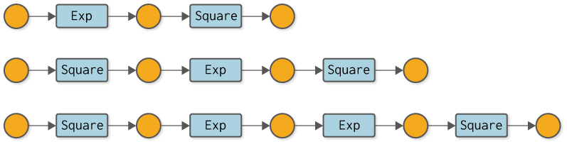
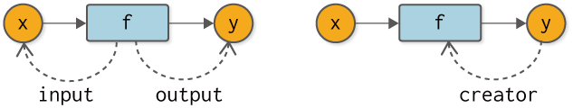
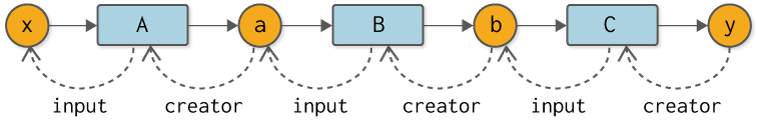
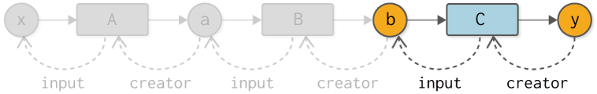
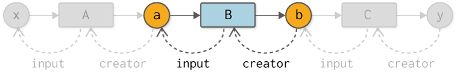
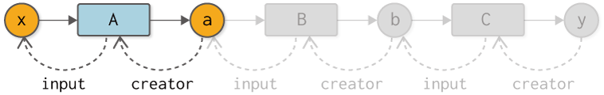

Step 7: Automation of backpropagation¶
The code implemented in the previous step
[1]:
import numpy as np
class Variable:
def __init__(self, data):
self.data = data
self.grad = None
class Function:
def __call__(self, input):
x = input.data
y = self.forward(x)
output = Variable(y)
self.input = input
return output
def forward(self, x):
raise NotImplementedError()
def backward(self, gy):
raise NotImplementedError()
class Square(Function):
def forward(self, x):
y = x ** 2
return y
def backward(self, gy):
x = self.input.data
gx = 2 * x * gy
return gx
class Exp(Function):
def forward(self, x):
y = np.exp(x)
return y
def backward(self, gy):
x = self.input.data
gx = np.exp(x) * gy
return gx
In the previous step, we successfully moved the back-propagation. However, there we had to manually code the back propagation calculations. What this means is that every time we do a new calculation, we have to write the code for back-propagation in our own hands. For example, if you consider some computational graphs like the one in Figure 7-1, you would have to write the code for backward propagation in each computation by hand. It is a tedious task above all else, with the potential for mistakes. Let’s automate the Boring Stuff with Python!

Figure 7-1 Examples of various computation graphs (variable names are omitted and functions are written in class names)
The next step is the automation of backward propagation. To be more precise, the idea is to create a mechanism by which the normal computation (forward propagation) - whatever computation it is - will automatically do the backward propagation. This is where Define-by-Run gets to the heart of the matter!
NOTE
Define-by-Run is a mechanism for making “connections” between calculations made in deep learning at the timing of the calculation. This is also referred to as a “dynamic computational graph”, and you can learn more about Define-by-Run and its benefits in the “column Define-by-Run”.
By the way, the calculation graphs shown in Figure 7-1 are all aligned calculations. Therefore, if we keep the order of the functions in the form of a list, we can do the backward propagation automatically by following them in the opposite direction. However, for branching graphs or complex graphs in which variables are used more than once, the simple list method cannot be used. Our goal is to build a system that can automatically backward propagate even the most complex computational graphs.
WARNING
As a matter of fact, it is also possible to perform back-propagation correctly for any computation graph by simply adding the computations performed to the list if the data structure of the list is modified. That data structure is called a Wengert list (or “tape” as it is also called). This book does not describe the Wengert list; those interested in the Wengert list should read the literature [2] [3] and others. Also, the benefits of Define-by-Run for Wengert lists can be found in literature [4].
7.2 For the automation of back propagation¶
In automating backward propagation, we start by thinking about the relationship between variables and functions. First, let’s look at it from the perspective of a function, that is, “What does a variable look like from a function? From the perspective of the function, variables exist as “input” and “output”. A variable exists for a function as an “input variable (input)” and an “output variable (output)” (the dashed line in the figure shows the reference), as shown in the left figure of
Figure 7-2.

Figure 7-2 Relationships between variables as seen from functions (left) and functions as seen from variables (right)
Moving on, what does a function look like from the perspective of a variable? The point to note here is that variables are “created” by functions. In other words, the function is the “creator” for the variable. In other words, it is a creator (creator). If the creator function does not exist, then it is considered to be a variable created by something other than the function, such as a variable given by the user.
Now, let’s incorporate the function-variable “connections” represented in Figure 7-2 into our code. Here, we will make that “connection” at the very moment when the normal computation (forward propagation) takes place. To do so, we first add the following code to the Variable class
[2]:
class Variable:
def __init__(self, data):
self.data = data
self.grad = None
self.creator = None # Added code
def set_creator(self, func): # Added code
self.creator = func # Added code
Here, we add an instance variable called creator. Then add a method to set the creator as the set_creator method. Then, add the following code to the Function class
[3]:
class Function:
def __call__(self, input):
x = input.data
y = self.forward(x)
output = Variable(y)
output.set_creator(self) # Let the output variable remember its creator
self.input = input
self.output = output # Remember the output
return output
def forward(self, x):
raise NotImplementedError()
def backward(self, gy):
raise NotImplementedError()
The forward calculation creates a Variable instance of output. At this time, the generated output is made to remember that “I (myself as a function) am the creator”. This is the heart of the mechanism for creating dynamic connections. Here, we set the output to the instance variable output to prepare for the next step.
NOTE
DeZero’s dynamic computation graphs work by recording their connections in a “box” called a variable when the actual calculation is done. A similar approach has been taken with Chainer and PyTorch.
In this way, if we have Variable and Function with connections, we can follow the computation graph in the opposite direction. In concrete code, it looks like this
[4]:
class Square(Function):
def forward(self, x):
y = x ** 2
return y
def backward(self, gy):
x = self.input.data
gx = 2 * x * gy
return gx
class Exp(Function):
def forward(self, x):
y = np.exp(x)
return y
def backward(self, gy):
x = self.input.data
gx = np.exp(x) * gy
return gx
A = Square()
B = Exp()
C = Square()
x = Variable(np.array(0.5))
a = A(x)
b = B(a)
y = C(b)
# Trace a node in a computational graph in reverse
assert y.creator == C
assert y.creator.input == b
assert y.creator.input.creator == B
assert y.creator.input.creator.input == a
assert y.creator.input.creator.input.creator == A
assert y.creator.input.creator.input.creator.input == x
First of all, we will explain about the assert statement, which is used like assert .... Here, if ... is not True it throws exception. Therefore, the assert statement can be used to check if the condition is met. By the way, if you run the above code, you can see that it satisfies all the conditions of the assert statement because it runs without any problems (no exceptions are raised).
As the above code shows, the instance variable creator of Variable takes you to the previous Function. And the instance variable input of Function takes you to the previous Variable. If we were to diagram this connection, it would look like Figure 7-3.

Fig. 7-3 The computational graph of the starting point of y in the reverse direction.
As shown in Figure 7-3, our computational graph is constructed by the connections between functions and variables. And, importantly, that connection is made when the computation actually takes place (when the data flows in forward propagation). This feature is what Define-by-Run is all about. In other words, a connection is created by the flow of data.
A data structure with connections as shown in Figure 7-3 is called a “linked node”. Nodes are the elements that make up a graph, and links represent references to different nodes. In other words, we are representing a computational graph in terms of a data structure called “linked nodes”.
7.3 Trying backward Propagation¶
Now, let’s do some backward propagation using the connection between variables and functions. First, backward propagation from y to b is performed. This can be implemented as follows (along with a diagram for your reference)

[5]:
y.grad = np.array(1.0)
C = y.creator # 1. Get a function
b = C.input # 2. Get the input of the function
b.grad = C.backward(y.grad) # 3. Call the backward method of the function
Here, we get a function from the instance variable creator of y and the input variable by the input of that function. Then it calls the backward method of the function. Following this, here is a diagram and code for the back propagation from the variable b to a.

[6]:
B = b.creator # 1. Get a function
a = B.input # 2. Get the input of the function
a.grad = B.backward(b.grad) # 3. Call the backward method of the function
Here, too, we use the same logic as before for reverse propagation. Specifically.
get a function
get the input of the function
call the
backwardmethod of a function.
This is the flow. And finally, the backward propagation from the variable a to x.

[7]:
A = a.creator # 1.Get a function
x = A.input # 2. Get input for the function
x.grad = A.backward(a.grad) # 3. Call the backward method of the function
print(x.grad)
3.297442541400256
That concludes all the backward propagation.
7.4 Adding the backward method¶
As you may have already guessed, the backward propagation code I just showed shows the same processing flow repeatedly. More precisely, the logic of backward propagation from one variable back to the previous one is all the same. So we add a new method called backward to the Variable class so that we can automate the iteration.
[8]:
class Variable:
def __init__(self, data):
self.data = data
self.grad = None
self.creator = None
def set_creator(self, func):
self.creator = func
def backward(self):
f = self.creator # 1.Get a function
if f is not None:
x = f.input # 2. Get input for the function
x.grad = f.backward(self.grad) # 3. Call the backward method of the function
x.backward() # Calling the backward method of the variable that is one step ahead of you (recursive)
The backward method is almost the same as the processing flow that has appeared repeatedly so far. Concretely, get a function from the creator of Variable and get the input variable of the function. Then it calls the backward method of the function. Finally, you call the variable’s backward method on a variable that is one step ahead of the variable. This causes the backward method of each variable to be called recursively.
NOTE
If the Variable instance’s creator is None, the backward propagation stops there. In that case, the Variable instance implies that it was created in a non-functional way – that it is primarily a variable given by a user.
Let’s use this new Variable to do some automated back-propagation.
[9]:
A = Square()
B = Exp()
C = Square()
x = Variable(np.array(0.5))
a = A(x)
b = B(a)
y = C(b)
y.grad = np.array(1.0)
y.backward()
print(x.grad)
3.297442541400256
Calling the backward method of the variable y, as described above, will cause automatic backward propagation. The results you get from doing it are the same as ever. Congratulations! This completes the most important base of automatic differentiation in DeZero.